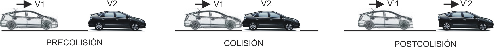

COLISIONES POR ALCANCE
| Valores orientativos de 'C' en relación con los daños | ||
|---|---|---|
| Tipo de colisión | Valor de 'C' | |
| Colisión sin deformación (Perfecta. inelást.) | 1.0 | |
| Colisión mixta | Daños muy leves | 0.9 |
| Daños leves | 0.8 | |
| Daños pequeños | 0.6 - 0.7 | |
| Daños medios | 0.5 | |
| Daños considerables | 0.3 - 0.4 | |
| Daños fuertes | 0.2 | |
| Daños muy fuertes | 0.1 | |
| Colisión con empotramiento (Perf. Plast.) | 0.0 | |